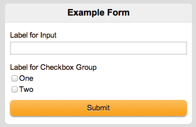

Building Apps
with Speed using MWF 1.3
Overview
What takes time in development?
- Constructing out business logic
- Building out data models
- Designing a smooth user experience
What shouldn't take time with MWF?
- Defining the user interface
- Handling device compatibility issues
MWF 1.3 UI Elements
A number of elements from the outset
- Header and Footer
- Menu, Content and Button
But there were a couple obvious lapses
- Forms
- Messages
MWF 1.3 added APIs for both of these
Example
Messages
<div class="message alert">Alert message</div>
<div class="message confirm">Confirm message</div>
<div class="message error">Error message</div>
<div class="message info">Info message</div>
Example
Forms
<form action="#">
<h2>Example Form</h2>
<label>Label for Input</label>
<input name="t-1" type="text">
<label>Label for Checkbox Group</label>
<div class="option">
<label><input name="c-1" value="1" type="checkbox">One</label>
<label><input name="c-2" value="2" type="checkbox">Two</label>
</div>
<input value="Submit" class="primary" type="submit">
</form>Example
Forms
Shorter Entity Names
Why have classes like...
<div class="menu-full menu-padded menu-detailed">New "lean CSS" style
<div class="menu detailed">What about backwards compatibility?
<link rel="stylesheet" href="/assets/css.php?lean">MWF 1.3 APIs
- Geolocation
- Preferences
- Customizable Home Screen
- Unit Tests
- Interactivity [under development]
Decorators
An object-oriented approach to UI elements
$decorator = Site_Decorator::menu();
$decorator->set_title('Menu Title');
$decorator->add_item('Item 1', '#1');
$decorator->add_item('Item 2', '#2');
echo $decorator->render();<div class="menu">
<h1>Menu Title</h1>
<ul>
<li><a href="#1">Item 1</a></li>
<li><a href="#1">Item 2</a></li>
</ul>
</div>PHP Decorators
MWF Core includes a set of PHP decorators
- Menu, Content, Button, Form, Header, Footer, etc.
But what about outside of MWF Core?
- MWFD project for PHP decorators github.com/ebollens/mwfd [under development]
- JS decorators from the Ohmage project
- Roll your own decorators for other languages
What's in a decorator?
A library to render a UI element
Object-oriented languages lend themselves to this
PHP decorators can be used as reference
$decorator = Site_Decorator::menu();
$decorator->set_title('Menu Title');
$decorator->add_item('Item 1', '#1');
$decorator->add_item('Item 2', '#2');var menu = mwf.decorator.Menu('Menu Title');
menu.addMenuLinkItem('Item 1', '#1');
menu.addMenuLinkItem('Item 2', '#2');Going further with decorators
A decorator may use multiple decorators
- Most PHP decorators are tag composites
- This could be extended to a page-level decorator
The line begins to blur... we're getting close to MVC views
Model-View-Controller (MVC)
Common paradigm in modern frameworks
- Ruby on Rails, Django, Struts, .NET MVC, etc.
Clear separation of application logic:
- Model manages the data layer
- View encapsulates the user interface
- Controller bridges the gap with business logic
Model-View-Controller (MVC)
Example
Basic Menu View (PHP)
<?php
class My_Controller extends Application_Controller {
public function index(){
$view = new View('menu');
$view->title = 'Menu Title';
$view->items = Menu_Model::all();
}
}<div class="menu">
<h1><?php echo $title; ?></h1>
<ul>
<?php foreach($items as $item){ ?>
<li><a href="<?php echo $item->url ?>"><?php echo $item->name ?></a></li>
<?php } ?>
</ul>
</div>Example
Basic Menu View (Ruby)
class MenuController < ApplicationController
def index
@title = "Menu Title"
@items = Menu.all
end
end<div class="menu">
<h1><%= @title %></h1>
<ul>
<% @items.each do |item| %>
<li><a href="<%= item.url %>"><%= item.name %></a></li>
<% end %>
</ul>
</div>Advantages to MVC
First and foremost, good software engineering
For MWF, segregate views from business logic
Minimize effort to build mobile & desktop sites
- Reuse controllers and models
- Create different views for mobile & desktop
- Possibly reuse elementary views for both contexts
Service-Oriented Architecture
Service Provider
- Expose business logic through service interface
Service Consumer
- Invokes services from the service provider
Service Definition
- Contract between provider & consumers
Why SOA?
A number of benefits including:
- Loose coupling
- Abstraction
- Reusability
Great for building multiple versions of an app
MWF with SOA
Business logic and data models in a service provider
MWF-based mobile application becomes a consumer
Allows for consumers in other media
A few considerations for MWF-based consumer:
- Use server rendering
- AJAX as progressive enhancement
Example
AJAX Progressive Enhancement
<a href="example.php" class="button preload">Example</a>if(mwf.classification.isStandard()){
$(document).ready(function(){
$('.preload').each(function(){
var page = $(this).attr('href');
getData(page);
});
});
$('.preload').click(function(e){
e.preventDefault();
displayData($(this).attr('href'));
});
}Where do we go from here?
MWF removed the need to make device-specific apps
Design patterns for deploying mobile & desktop apps
... but isn't that still a bit too much work?
Responsive Design
Responsive design is the next frontier
- Build once, view everywhere
But still some niches where MWF is needed
- Differing mobile applicability
- Supporting low-end devices